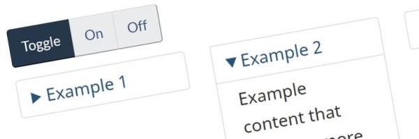

Expand/hide – Standard web pages – CRA web service manual
The expand/hide component (also known as accordion or expand/collapse) allows content to be hidden until requested. The pattern consists of a trigger link that shows or hides the content.
On this page
When to use
The expand/hide component can be used in 2 situations, when presenting a choice between mutually exclusive answers or when presenting secondary information.
Presenting a choice between mutually exclusive answers
Use this pattern when people need to get different answers depending on their situation and when these answers are mutually exclusive.
This reduces the risk of having people wrongly think they got the answer that applies to their situation.
Example
Below, real life example from: Canada child benefit - Who can apply
Determine if you are in a shared custody situation
Does the child spend their time:
-
about equally between both parents
If the child shares their time about equally between the parents, then both parents are considered to have shared custody of that child...
-
mostly with you
If the child lives with you most of the time, you are considered to have primary custody for the purposes of the Canada child benefit...
-
mostly with the other parent
If the child lives with the other parent most of the time, the other parent is considered to have primary custody for the purposes of the Canada child benefit...
Supporting blog post
In November 2019, the DTO modified Canada.ca guidance to allow the use of the expand/collapse design pattern to present a choice between mutually exclusive answers.
[18 September 2020]
Presenting secondary information
Use this pattern to prevent secondary content from interfering with the main task.
This can be content that applies to most people, but that only a few people may need to use (for example, a privacy statement or additional details not needed to accomplish the main task).
It can also be content that applies only to a minority of people (such as when there is specific information for a specific audience).
Example
Below, real life example from: CEWS - How to apply
Apply for CEWS
You must submit a separate application for each claim period you are eligible for, and for each payroll (RP) account you have.
Read the Privacy Statement
When you apply for the Canada Emergency Wage Subsidy (CEWS), your information is collected under the authority of the Income Tax Act as part of the Government of Canada’s response to the COVID-19 pandemic. At this time the relevant personal information bank, CRA PPU 231, may not have been registered...
For an in-depth understanding of the online application requirements and input fields, refer to the application guide.
How to implement
Appearance
Your primary text...
-
First option
Your text for the first option...
-
Second option
Your text for the second option...
-
Third option
Your text for the third option...
HTML code
<p>Your primary text...</p>
<ul class="list-unstyled">
<li>
<details>
<summary>First option</summary>
<p>Your text for the first option...</p>
</details>
</li>
<li>
<details>
<summary>Second option</summary>
<p>Your text for the second option...</p>
</details>
</li>
<li>
<details>
<summary>Third option</summary>
<p>Your text for the third option...</p>
</details>
</li>
</ul>
Coding considerations:
- Do not add any styling decoration aside from the default
- This includes
wells,panelsorthumbnails, as this adds unnecessary borders
- This includes
Use expand/hide
- to hide secondary or tertiary content, as it is likely users rarely need to expand this information
- when presenting a choice between mutually exclusive answers
- to hide content that users only need to read once
- for content such as:
- Examples of concepts, rules, etc.
- Niche or rarely-used reference content that is not relevant to the vast majority of users
Don't use expand/hide
- to hide primary or essential content unless they are part of a choice between mutually exclusive answers
- to tidy up the look of a page
- Separate the content over several pages, or place the information in blocks to make it look better
- if the majority of people need the content to accomplish the main task (unless the answers are mutually exclusive)
- if people need to answer several questions to get the answer that applies to them (use field flow instead)
- if one of the mutually exclusive answers has multiple sub-tasks or more than one page of supporting content (use field flow instead)
Related components and functions
Additional add-on features and behaviours are available.
-
